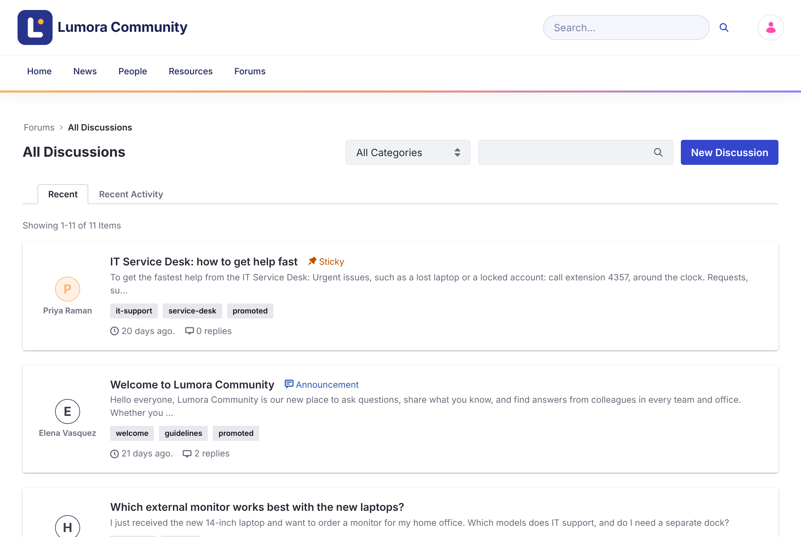
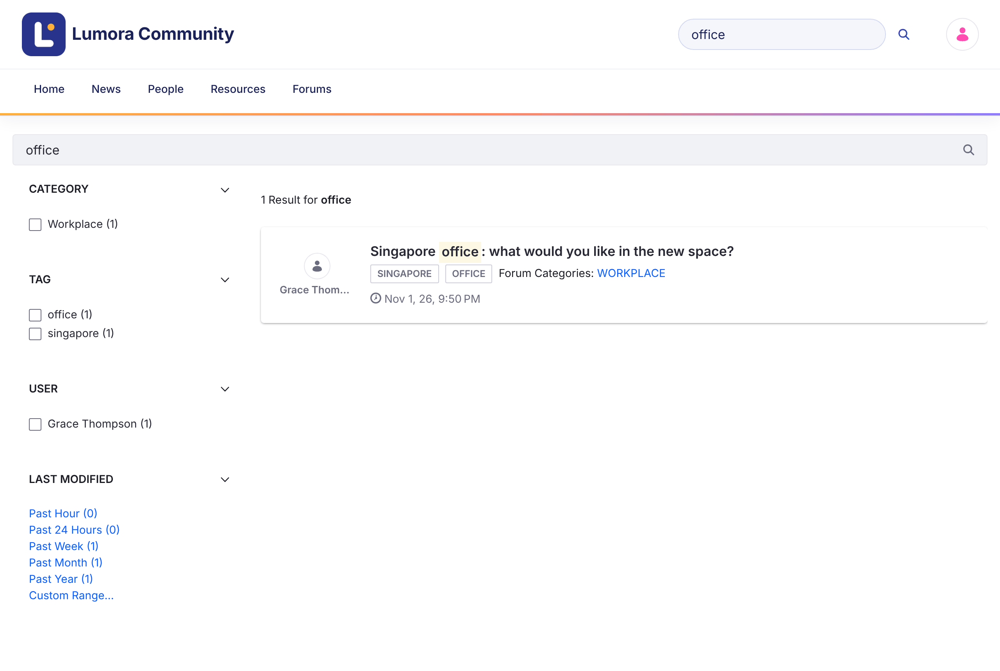

Halaman ini adalah terjemahan dari versi bahasa Inggris. Label antarmuka dan nama menu ditulis dalam bahasa Inggris. Jika ada perbedaan, versi bahasa Inggris yang berlaku.
Menjelajah dan Mencari
Halaman Beranda Forum
Halaman beranda (/web/forums) menampilkan statistik komunitas (solusi, diskusi, dan pesan), bilah pencarian, Promoted Discussions yang dipilih oleh tim komunitas, dan kisi kategori. Klik kategori untuk melihat topiknya.
Semua Diskusi
Daftar diskusi menampilkan setiap topik, atau topik dari satu kategori.

- Recent mengurutkan topik berdasarkan waktu pembuatannya. Recent Activity mengurutkannya berdasarkan balasan terbarunya.
- Topik dengan prioritas (Urgent, Sticky, atau Announcement) selalu muncul pertama.
- Gunakan menu All Categories untuk menampilkan satu kategori dan subkategorinya.
- Gunakan kotak pencarian untuk memfilter daftar berdasarkan kata kunci, atau klik tag untuk menampilkan topik dengan tag tersebut.
- Lencana menunjukkan status topik: Solved, Locked, Flagged, dan prioritasnya.
Pencarian
Bilah pencarian di header dan di halaman beranda mencari topik forum. Halaman hasil memiliki facet untuk mempersempit hasil berdasarkan Category, Tag, User, dan tanggal Modified.

Pencarian hanya mencakup topik dari situs forum saat ini.
Topik Terkait
Halaman topik mencantumkan Related Topics: topik lain dalam kategori yang sama, dengan aktivitas terbaru lebih dulu.